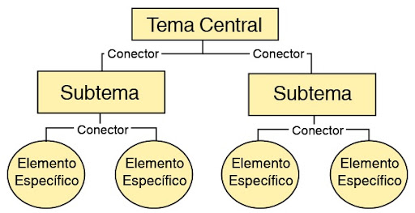

Función:
Representar jerárquicamente conceptos y sus relaciones, organizando información compleja en una estructura visual que permite ver cómo los conceptos se interrelacionan.
Representar jerárquicamente conceptos y sus relaciones, organizando información compleja en una estructura visual que permite ver cómo los conceptos se interrelacionan.
Jerárquicos: Comienzan con el concepto más general en la parte superior y se ramifican hacia los conceptos más específicos.
Conectores: Utilizan palabras o frases de enlace entre los conceptos para explicar la relación entre ellos.
Claridad visual: Cada nivel de la jerarquía se organiza en grupos o categorías visuales, facilitando la comprensión.
Flexible: Se pueden agregar más niveles de información o detalles a medida que se desarrolla el tema.
En Ciencias Naturales: Son útiles para organizar conceptos complejos como ciclos biológicos o sistemas naturales. Un mapa conceptual sobre el ciclo del agua puede mostrar las interacciones entre evaporación, condensación y precipitación.
En Lengua y Literatura: Comprender las relaciones entre los elementos de una obra literaria, como personajes, temas o eventos. Un mapa conceptual sobre "El Quijote" podría mostrar las relaciones entre los personajes principales, sus motivaciones y los temas tratados en la obra.
En Matemáticas: Permiten organizar teoremas, fórmulas y conceptos matemáticos. Un mapa conceptual sobre "Geometría" puede conectar conceptos de figuras, propiedades y teoremas clave.
En Filosofía: Son ideales para desglosar teorías complejas y su relación con otros filósofos. Un mapa conceptual del pensamiento de Platón podría organizar sus teorías sobre la justicia, el alma y el conocimiento.

Obra publicada con Licencia Creative Commons Reconocimiento No comercial Compartir igual 4.0